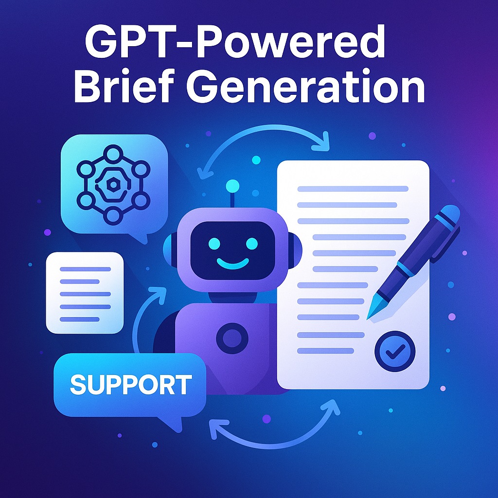
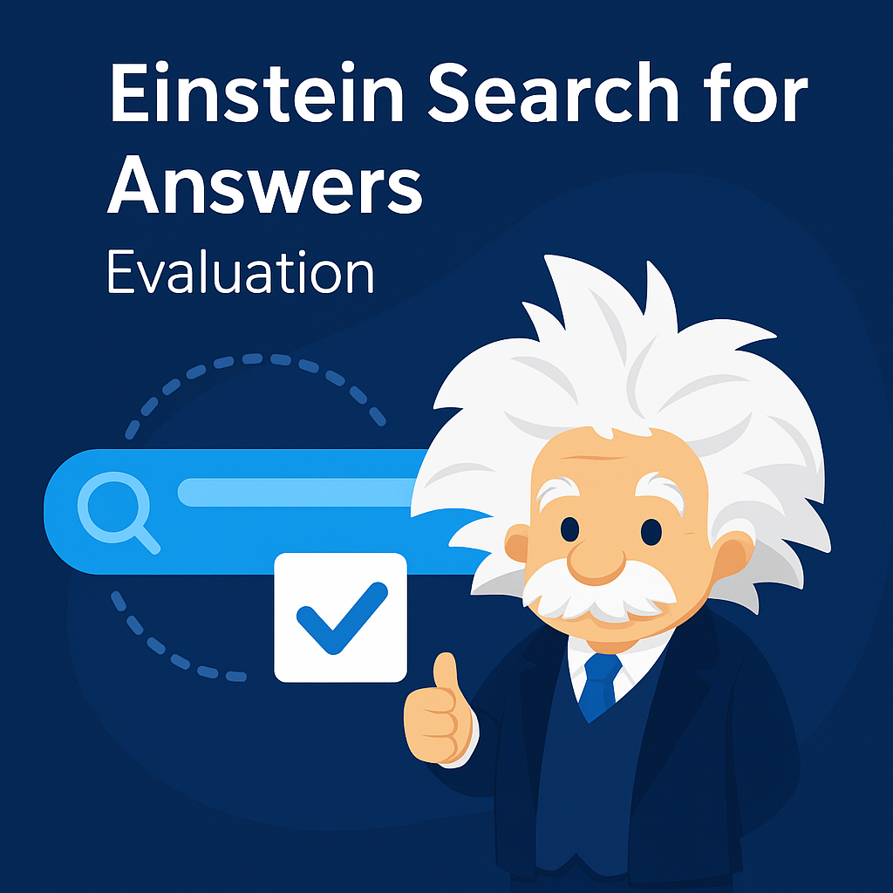
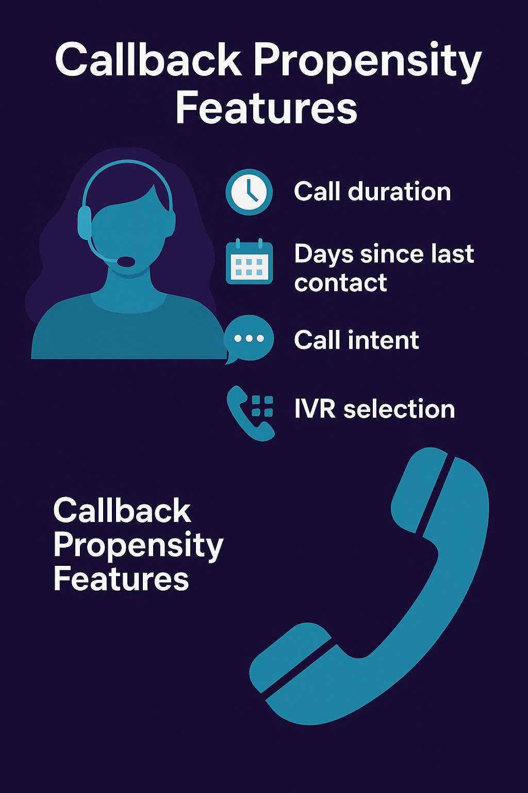

Hover (desktop) or tap (mobile) a card to flip it and see details.

GPT-Powered Brief Generation
- Converted chats into atomic Q&A briefs aligned 1:1 with Help & Support articles; clarity + quote-match validation.
- Reduced duplication; improved precision on high-frequency tax topics; SME-ready review artifacts.
Tap to flip
GPT-Powered Brief Generation
NLP • Prompt Engineering • Evaluation

Einstein Search for Answers — Evaluation
- 1k+ real queries with fallback & EKM retrieval; scored accuracy, grounding, faithfulness.
- Documented DMO variance; recommended terminology normalization and model/data fixes.
Tap to flip
Einstein Search for Answers — Evaluation
Salesforce • Retrieval QA • Metrics
Agent Opportunity & Transfers
- Analyzed ~75k transcripts; surfaced self-solvable intents & ambiguity triggers driving transfers.
- Informed UX copy, disambiguation logic, and playbooks to reduce handoffs.
Tap to flip
Agent Opportunity & Transfers
Behavior Analytics • Multi-intent Disambiguation

Callback Propensity Features
- Derived LLM signals (topics, answer presence, resolution type) to explain repeat contacts.
- Tableau insights enabled proactive outreach for high-risk cohorts.
Tap to flip
Callback Propensity Features
Feature Engineering • Tableau Storytelling
Policy Overlap Analyzer (ToS ↔ Privacy)
- Classified & summarized clauses using ToS;DR-style taxonomy; highlighted contradictions across ToS and Privacy Policies.
- Produced human-readable comparisons & heatmaps to increase transparency and informed consent.
Tap to flip
Policy Overlap Analyzer
Legal NLP • Summarization • Explainability
Privacy Ontology
- Designed hierarchical ontology for policy comprehension; aligned GPT labeling with transparent prompts + error analysis.
- Benchmarked vs. baselines; documented metrics, inter-rater guidance, and dataset structure.
Tap to flip
Privacy Ontology & EMNLP
Ontology • Evaluation • Error Analysis
XAI: Human-AI Accuracy
Explainable AI • Human Factors
XAI: Human-AI Prediction Accuracy
- Explored reliable measurement strategies for human+AI team accuracy; clarified evaluation pitfalls and best practices.
Tap to flip
XAI Metrics
Explainable AI • Human Factors
Emissions Impossible — What-Ifs
AI for Social Impact • Scenarios
Emissions Impossible — AI “What-If” Scenarios
- Outlined five interventions where AI reduces emissions; analyzed feasibility, trade-offs, and measurement pathways.
Tap to flip
Emissions Impossible
AI for Social Impact • Scenario Planning
Devanagari Recognition
Computer Vision • Classical ML
Automated Handwritten Devanagari Character Recognition
- Built a CV pipeline for Devanagari script; compared feature extraction and classifier performance.
Tap to flip
Devanagari Character Recognition
Computer Vision • Classical ML
Cloud Auditing
Security • Web App
Privacy-Preserving Cloud Auditing
- Prototyped a web app enabling audit transparency with privacy safeguards for shared cloud data.
Tap to flip
Privacy-Preserving Cloud Auditing
Security • Web App
Explainable AI for Legal Docs
Summarization • UX
Explainable AI for Legal Documents
- Developed readable policy summaries highlighting rights, obligations, and sensitive data flows.
Tap to flip
Explainable AI for Legal Docs
Summarization • UX
Employee Attrition
Predictive Modeling
Employee Attrition Prediction
- Trained models to identify attrition risk & drivers; delivered interpretable insights for HR decisions.
Tap to flip
Employee Attrition Prediction
Predictive Modeling
Lockdown & Mental Health
Survey • Storytelling
Lockdown & Mental Health Survey
- Ran a global survey; built visual narratives to surface stressors and coping patterns.
Tap to flip
Lockdown & Mental Health
Survey • Storytelling